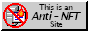
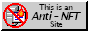

The LibreQuake project aims to create a complete, free content first-person shooter game, but LibreQuake by itself is just the raw material for a game. It must be paired with a compatible engine to be played.
There is a massive back catalogue, spanning over two decades, containing thousands of Quake levels and other modifications (“mods”) made by fans of the game. LibreQuake aims to be compatible with these and allows most to be played without the need to use non-free software.


 
 LibreQuake is copyrighted 2019 - , licensed under an open license.